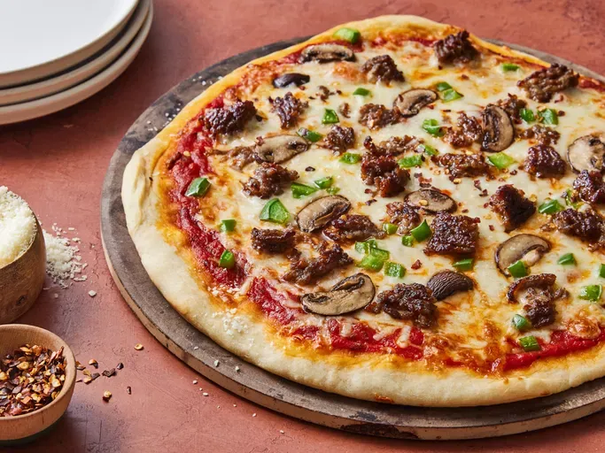

Back to Home
Thin-Crust Pizza

Description:
This thin-crust pizza recipe produces a crisp, flavorful crust that is the perfect base for your favorite toppings. It's easy to make and delicious to eat!
Ingredients:
- 3 1/2 cups all-purpose flour
- 1 teaspoon sugar
- 1 envelope instant dry yeast
- 2 teaspoons kosher salt
- 1 1/2 cups water, 110 degrees F
- 2 tablespoons olive oil, plus 2 teaspoons
- 1/2 cup pizza sauce
- 2 cups shredded mozzarella cheese
- Your choice of toppings (pepperoni, vegetables, etc.)
Steps:
- In a large bowl, combine the flour, sugar, and yeast. Add the salt and mix well.
- Add the water and 2 tablespoons of olive oil. Mix until the dough comes together. Knead on a lightly floured surface until smooth and elastic, about 10 minutes.
- Place the dough in a lightly oiled bowl, cover, and let rise in a warm place until doubled in size, about 1 hour.
- Preheat the oven to 475 degrees F (245 degrees C).
- Punch down the dough and divide it in half. Roll each half into a 12-inch circle on a lightly floured surface.
- Transfer the dough to a pizza stone or baking sheet. Spread the pizza sauce over the dough, leaving a small border around the edges.
- Sprinkle the shredded mozzarella cheese evenly over the sauce. Add your favorite toppings.
- Bake in the preheated oven until the crust is golden brown and the cheese is bubbly and melted, about 12-15 minutes.
- Remove from the oven and let cool slightly before slicing and serving.